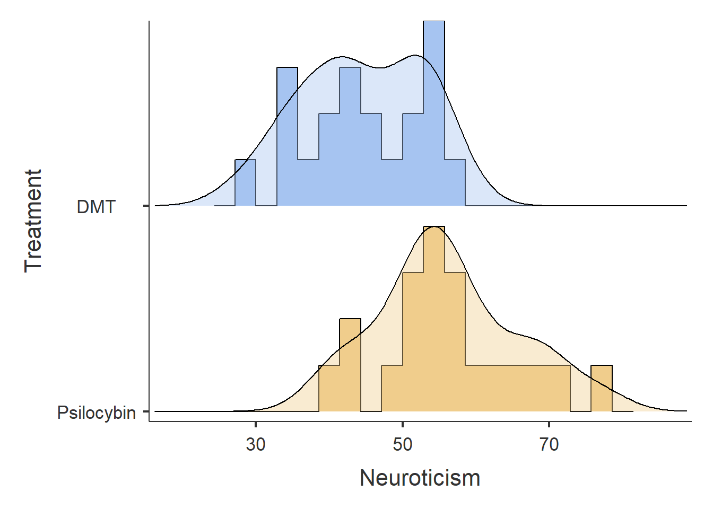

8 Descriptive Statistics and T-tests in R
In this session, we are going to explore how to perform descriptive statistics and conduct both independent and paired-samples t-tests. Earlier in the course, we looked at using base-R for these tasks, but now we will introduce more intuitive and powerful functions that make these processes easier. Additionally, we will learn how to check parametric assumptions in R. By the end of this session, you will be able to:
- Use the jmv package to run descriptive statistics and check parametric assumptions.
- Conduct an independent samples t-test in R.
- Conduct a paired-samples t-test in R.
- Conduct apriori and post-hoc power analysis in R for t-tests.
We’ll also cover correlations and ANOVAs this week, but to keep things organized, we’ll address those in separate chapters.
8.1 Let’s Get Set Up
Let’s begin by ensuring your working environment is ready for today’s session. Open RStudio or Posit Cloud and complete the following tasks to set everything up.
8.1.1 Set Up Your Working Directory
Create a folder called week7 in your class folder. This will be your working directory for today’s session. To set this folder as your working directory, click Session -> Set Working Directory -> Choose Directory, and select the newly created week7 folder. Click Open to set it as your working directory.
The path to your directory will be printed in the console, and it should look something like this:
setwd("C:/Users/0131045s/Desktop/Programming/R/Workshops/rintro/week7") #this specific path will differ based on your folder configuration, but make sure the end part is in `week7`Make sure the path ends with week7, although your exact path might differ depending on your folder structure.
8.1.2 Download and Import Your Files
We are going to need the following files for today’s session. You will find them in the Microsoft Teams channel under the heading Week 7 and 8 - Descriptive and Inferential Statistics
01-set-up.R02-descriptives.R03-t-tests.Rwellbeing.csvpsycho.csv
Download these files onto your computer and move each file to your week7 folder.
8.1.3 Open the Set-Up R Script
Now in RStudio (or posit cloud), open the R script called 01-set-up.R. This script will guide you through installing and loading the necessary packages and datasets for today’s exercises.
8.1.4 Install and Load Your Packages
We’ll be using several R packages to make our analysis easier. The jmv package is particularly helpful for running descriptive statistics and t-tests, while pwr helps us calculate power for our tests. The tidyverse will assist with data cleaning, and car will allow us to check assumptions like homogeneity of variance.
In the 01-set-up.R script, type and run the following code under the section labeled #Load in Our Packages:
REMEMBER: If you encounter an error message like Error in library(package name): there is no packaged calledpackage name``, you’ll need to install the package first by typing the following into your console:
For example, if you need to install the jmv package, you would type install.packages("jmv") into the console.
8.1.5 Load in the Wellbeing Dataset
We’ll be working with a datasets called wellbeing.csv and psycho.csv. In the 01-set-up.R script, type the following code under the section labeled #Load in Our Dataset to load the datasets into R:
After loading the datasets, it’s always good practice to inspect it before doing any analyses. You can use the head() and str() functions to get an overview of the wellbeing dataset:
## id gender Condition age pain fatigue depr wellb
## 1 20220137 Female No Caffeine 44 69 49 61 52
## 2 20220147 Female No Caffeine 36 37 45 63 57
## 3 20220155 Male No Caffeine 43 32 55 79 35
## 4 20220164 Female No Caffeine 26 38 46 54 72
## 5 20220173 Female No Caffeine 34 35 45 76 45
## 6 20220177 Female No Caffeine 41 48 44 59 69## 'data.frame': 420 obs. of 8 variables:
## $ id : int 20220137 20220147 20220155 20220164 20220173 20220177 20220184 20220191 20220199 20220203 ...
## $ gender : chr "Female" "Female" "Male" "Female" ...
## $ Condition: chr "No Caffeine" "No Caffeine" "No Caffeine" "No Caffeine" ...
## $ age : int 44 36 43 26 34 41 46 45 34 19 ...
## $ pain : int 69 37 32 38 35 48 53 42 42 59 ...
## $ fatigue : int 49 45 55 46 45 44 51 49 44 48 ...
## $ depr : int 61 63 79 54 76 59 77 67 61 62 ...
## $ wellb : int 52 57 35 72 45 69 61 59 60 46 ...From this, you’ll see that our dataset contains 8 columns. We have two character columns (gender and Condition) and five integer columns (id, age, pain, fatigue, depr, and wellb). This data was collected from an experimental study investigating the effects of Caffeine (No Caffeine, Low Caffeine, and High Caffeine) on various outcome variables, including experiences of pain, fatigue, depression, and overall wellbeing. Additionally, participants’ age and Gender were recorded recorded.
As an exercise, try running the head() and str() functions on the df_psycho data set.
Now that our environment is set up and our dataset is loaded, we are ready to dive into descriptive statistics.
8.2 Descriptive Statistics
If you remember back to our first session to our first session we used the summary and aggregate functions to compute descriptive statistics. The summary function is useful for quick glance at your variables.
## id gender Condition age
## Min. :20220137 Length:420 Length:420 Min. :18.00
## 1st Qu.:20220697 Class :character Class :character 1st Qu.:25.00
## Median :20221312 Mode :character Mode :character Median :34.00
## Mean :20221301 Mean :34.79
## 3rd Qu.:20221903 3rd Qu.:43.25
## Max. :20222492 Max. :55.00
## pain fatigue depr wellb
## Min. :28.0 Min. :41.00 Min. :49.00 Min. :21.00
## 1st Qu.:33.0 1st Qu.:45.00 1st Qu.:61.00 1st Qu.:51.00
## Median :38.0 Median :47.00 Median :66.00 Median :60.00
## Mean :40.6 Mean :47.95 Mean :66.14 Mean :58.52
## 3rd Qu.:45.0 3rd Qu.:50.00 3rd Qu.:70.00 3rd Qu.:67.00
## Max. :90.0 Max. :65.00 Max. :94.00 Max. :83.00However, the information we get from summary is limited. It doesn’t provide important measures like the standard deviation or interquartile range, and it can’t be used to generate descriptive statistics for different groups. For that, we need the aggregate function:
## df_wellbeing$Condition df_wellbeing$age
## 1 High Caffeine 34.52857
## 2 Low Caffeine 34.01429
## 3 No Caffeine 35.83571The downside of aggregate is that it computes only one statistic at a time. If you want to calculate the mean, median, and standard deviation, you have to repeat the code for each:
## df_wellbeing$Condition df_wellbeing$age
## 1 High Caffeine 34.52857
## 2 Low Caffeine 34.01429
## 3 No Caffeine 35.83571## df_wellbeing$Condition df_wellbeing$age
## 1 High Caffeine 33.5
## 2 Low Caffeine 33.0
## 3 No Caffeine 36.0## df_wellbeing$Condition df_wellbeing$age
## 1 High Caffeine 10.961307
## 2 Low Caffeine 10.938669
## 3 No Caffeine 9.894123This approach is cumbersome, especially with larger data sets that contain many variables. Moreover, aggregate doesn’t handle more complex combinations of groups, such as the average age of males in the high-caffeine condition.
8.3 Introducing the jmv package
The jmv package provides a powerful function, descriptives(), which makes descriptive statistics more flexible and comprehensive. It calculates a wide range of statistics across multiple variables and can easily account for different groups. You can even create quick plots as part of the output.
You can get full details of the function by typing ?descriptives in your console after loading the package. While the syntax might look complex, it’s actually quite straightforward when you break it down.
descriptives(data, # The dataset you are using
vars, # The variables you want to calculate descriptives for
splitBy = NULL, # Optional grouping variable; set to NULL if not grouping data
freq = FALSE, # Whether to show frequency counts (useful for categorical variables)
desc = "columns", # Orientation of the output (columns vs rows), defaults to columns
hist = FALSE, # If TRUE, creates histograms for the variables
dens = FALSE, # If TRUE, plots density estimates
bar = FALSE, # If TRUE, generates bar charts for the variables
barCounts = FALSE, # If TRUE, displays counts on the bar chart (only applicable if `bar` is TRUE)
box = FALSE, # If TRUE, generates box plots for the variables
violin = FALSE, # If TRUE, creates violin plots to visualize data distribution
dot = FALSE, # If TRUE, adds dot plots
dotType = "jitter", # Determines the type of dot plot (e.g., jitter to spread points out)
boxMean = FALSE, # If TRUE, shows the mean in the box plot
boxLabelOutliers = TRUE, # If TRUE, labels outliers in the box plot
qq = FALSE, # If TRUE, generates Q-Q plots for checking normality
n = TRUE, # If TRUE, displays the sample size (n) for each variable
missing = TRUE, # If TRUE, shows the number of missing values for each variable
mean = TRUE, # If TRUE, displays the mean for each variable
median = TRUE, # If TRUE, displays the median for each variable
mode = FALSE, # If TRUE, displays the mode (most frequent value) for each variable
sum = FALSE, # If TRUE, displays the sum of all values for each variable
sd = TRUE, # If TRUE, displays the standard deviation for each variable
variance = FALSE, # If TRUE, displays the variance for each variable
range = FALSE, # If TRUE, displays the range (max - min) for each variable
min = TRUE, # If TRUE, displays the minimum value for each variable
max = TRUE, # If TRUE, displays the maximum value for each variable
se = FALSE, # If TRUE, displays the standard error for each variable
ci = FALSE, # If TRUE, calculates and displays the confidence interval (CI) for each variable
ciWidth = 95, # The width of the confidence interval, defaults to 95%
iqr = FALSE, # If TRUE, displays the interquartile range (IQR) for each variable
skew = FALSE, # If TRUE, displays the skewness of the distribution for each variable
kurt = FALSE, # If TRUE, displays the kurtosis (tailedness) of the distribution for each variable
sw = FALSE, # If TRUE, runs the Shapiro-Wilk test for normality on each variable
pcEqGr = FALSE, # If TRUE, calculates percentiles based on equal groupings
pcNEqGr = 4, # The number of equal groups for percentiles (defaults to quartiles)
pc = FALSE, # If TRUE, calculates specific percentiles (e.g., 25th, 50th, 75th)
pcValues = "25,50,75", # Specifies which percentiles to calculate (default: 25th, 50th, 75th percentiles)
extreme = FALSE, # If TRUE, displays extreme values for each variable
extremeN = 5, # The number of extreme values to display for each variable (defaults to 5)
formula) # Optional argument to specify a formula if using a modelYou don’t need to write out all the arguments every time you use descriptives(). You can just specify the dataset and the variables you want to analyse, and everything else will use default settings. If you want to change those defaults, you can simply add the corresponding argument to your code.
8.3.1 Using the jmv function to generate descriptive statistics
Open up script 02-descriptives.R. In that script, let’s use the descriptives() function to compute statistics for the wellb and depr variables:
##
## DESCRIPTIVES
##
## Descriptives
## ──────────────────────────────────────────────
## wellb depr
## ──────────────────────────────────────────────
## N 420 420
## Missing 0 0
## Mean 58.52381 66.14048
## Median 60.00000 66.00000
## Standard deviation 11.39555 7.629661
## Minimum 21 49
## Maximum 83 94
## ──────────────────────────────────────────────By default, this function displays the sample size (N), number of missing values, mean, median, standard deviation, minimum, and maximum for each variable. If you want to include additional statistics, like the mode, standard error (se) or confidence intervals (ci), you can set those options to TRUE:
##
## DESCRIPTIVES
##
## Descriptives
## ─────────────────────────────────────────────────────
## wellb depr
## ─────────────────────────────────────────────────────
## N 420 420
## Missing 0 0
## Mean 58.52381 66.14048
## Std. error mean 0.5560460 0.3722893
## 95% CI mean lower bound 57.43082 65.40869
## 95% CI mean upper bound 59.61680 66.87226
## Median 60.00000 66.00000
## Mode 61.00000 66.00000
## Standard deviation 11.39555 7.629661
## Minimum 21 49
## Maximum 83 94
## ─────────────────────────────────────────────────────
## Note. The CI of the mean assumes sample means
## follow a t-distribution with N - 1 degrees of
## freedomThe descriptives function will by default assume you don’t want to split the variables selected in vars by different groups. But we can easily achieve this by using the splitBy argument. In this example, let’s split our descriptive statistics based on participants identified gender.
descriptives(data = df_wellbeing,
vars = c("wellb", "depr"),
splitBy = c("gender"),
mode = TRUE,
se = TRUE,
ci = TRUE)##
## DESCRIPTIVES
##
## Descriptives
## ───────────────────────────────────────────────────────────────
## gender wellb depr
## ───────────────────────────────────────────────────────────────
## N Female 260 260
## Male 160 160
## Missing Female 0 0
## Male 0 0
## Mean Female 58.83077 65.81923
## Male 58.02500 66.66250
## Std. error mean Female 0.7261969 0.4775088
## Male 0.8604221 0.5936567
## 95% CI mean lower bound Female 57.40077 64.87894
## Male 56.32567 65.49003
## 95% CI mean upper bound Female 60.26077 66.75952
## Male 59.72433 67.83497
## Median Female 60.00000 65.00000
## Male 59.00000 66.00000
## Mode Female 53.00000 66.00000
## Male 61.00000 69.00000
## Standard deviation Female 11.70957 7.699597
## Male 10.88357 7.509229
## Minimum Female 21 49
## Male 23 51
## Maximum Female 83 94
## Male 80 94
## ───────────────────────────────────────────────────────────────
## Note. The CI of the mean assumes sample means follow a
## t-distribution with N - 1 degrees of freedomYou can also split by multiple variables. For example, if you want to examine well-being and depression scores by both gender and caffeine conditions:
descriptives(data = df_wellbeing,
vars = c("wellb", "depr"),
splitBy = c("gender", "Condition"),
mode = TRUE,
se = TRUE,
ci = TRUE)##
## DESCRIPTIVES
##
## Descriptives
## ───────────────────────────────────────────────────────────────────────────────
## gender Condition wellb depr
## ───────────────────────────────────────────────────────────────────────────────
## N Female High Caffeine 85 85
## Low Caffeine 85 85
## No Caffeine 90 90
## Male High Caffeine 55 55
## Low Caffeine 55 55
## No Caffeine 50 50
## Missing Female High Caffeine 0 0
## Low Caffeine 0 0
## No Caffeine 0 0
## Male High Caffeine 0 0
## Low Caffeine 0 0
## No Caffeine 0 0
## Mean Female High Caffeine 60.42353 64.90588
## Low Caffeine 56.82353 66.52941
## No Caffeine 59.22222 66.01111
## Male High Caffeine 58.38182 67.21818
## Low Caffeine 58.23636 65.50909
## No Caffeine 57.40000 67.32000
## Std. error mean Female High Caffeine 1.303129 0.8167750
## Low Caffeine 1.363918 0.7934586
## No Caffeine 1.090966 0.8639679
## Male High Caffeine 1.392982 0.9508780
## Low Caffeine 1.424406 0.9159539
## No Caffeine 1.692239 1.225058
## 95% CI mean lower bound Female High Caffeine 57.83211 63.28164
## Low Caffeine 54.11123 64.95153
## No Caffeine 57.05450 64.29443
## Male High Caffeine 55.58906 65.31179
## Low Caffeine 55.38060 63.67271
## No Caffeine 53.99932 64.85815
## 95% CI mean upper bound Female High Caffeine 63.01494 66.53013
## Low Caffeine 59.53583 68.10729
## No Caffeine 61.38995 67.72780
## Male High Caffeine 61.17458 69.12458
## Low Caffeine 61.09213 67.34547
## No Caffeine 60.80068 69.78185
## Median Female High Caffeine 61 64
## Low Caffeine 60 66
## No Caffeine 60.00000 64.50000
## Male High Caffeine 59 68
## Low Caffeine 58 65
## No Caffeine 59.00000 66.00000
## Mode Female High Caffeine 53.00000 60.00000
## Low Caffeine 65.00000 70.00000
## No Caffeine 60.00000 63.00000
## Male High Caffeine 61.00000 69.00000
## Low Caffeine 65.00000 61.00000
## No Caffeine 70.00000 58.00000
## Standard deviation Female High Caffeine 12.01425 7.530294
## Low Caffeine 12.57471 7.315327
## No Caffeine 10.34981 8.196319
## Male High Caffeine 10.33063 7.051900
## Low Caffeine 10.56368 6.792896
## No Caffeine 11.96594 8.662469
## Minimum Female High Caffeine 21 52
## Low Caffeine 21 49
## No Caffeine 35 51
## Male High Caffeine 25 53
## Low Caffeine 34 51
## No Caffeine 23 53
## Maximum Female High Caffeine 83 85
## Low Caffeine 77 84
## No Caffeine 83 94
## Male High Caffeine 80 83
## Low Caffeine 77 80
## No Caffeine 76 94
## ───────────────────────────────────────────────────────────────────────────────
## Note. The CI of the mean assumes sample means follow a t-distribution
## with N - 1 degrees of freedomThis flexibility makes the descriptives() function much more powerful than base R functions like summary() or aggregate()1.
8.3.2 Using the jmv function to generate graphs
Another great feature of the descriptives package is that we can also generate plots like box plots, bar charts, or histograms. Let’s use descriptives to calculate descriptive statistics for the fatigue variable based on gender and also generate each plot.
descriptives(data = df_wellbeing,
vars = c("fatigue"),
splitBy = c("gender"),
box = TRUE,
bar = TRUE,
hist = TRUE)##
## DESCRIPTIVES
##
## Descriptives
## ────────────────────────────────────────────
## gender fatigue
## ────────────────────────────────────────────
## N Female 260
## Male 160
## Missing Female 0
## Male 0
## Mean Female 47.40000
## Male 48.85000
## Median Female 47.00000
## Male 48.00000
## Standard deviation Female 3.929101
## Male 4.000314
## Minimum Female 41
## Male 43
## Maximum Female 61
## Male 65
## ────────────────────────────────────────────This ability to create plots using descriptives is really useful, particularly when conducting exploratory data analysis. The only downside is that you do not have control about how the plots look. That’s where you will need to transition to using functions like ggplot.
8.3.3 Exercises
Generate descriptive statistics for the
painandfatiguevariables, splitting by caffeine condition. Include the mode and standard error, but not confidence intervals.Extend the previous exercise to also display the range and variance for each variable. What arguments do you need to change?
Generate descriptive statistics for
wellbandagevariables, split by both gender and caffeine condition. Display only the mean and sample size for each variable. Your output should look like the following
##
## DESCRIPTIVES
##
## Descriptives
## ───────────────────────────────────────────────────────────
## gender Condition wellb depr
## ───────────────────────────────────────────────────────────
## N Female High Caffeine 85 85
## Low Caffeine 85 85
## No Caffeine 90 90
## Male High Caffeine 55 55
## Low Caffeine 55 55
## No Caffeine 50 50
## Mean Female High Caffeine 60.42353 64.90588
## Low Caffeine 56.82353 66.52941
## No Caffeine 59.22222 66.01111
## Male High Caffeine 58.38182 67.21818
## Low Caffeine 58.23636 65.50909
## No Caffeine 57.40000 67.32000
## ───────────────────────────────────────────────────────────- Modify the following code to split by both gender and caffeine condition, and add density estimates (
dens = TRUE). What changes in the plot?
Display skewness and kurtosis for the
wellbvariable, split by caffeine condition. How do these statistics help you understand the data?Examine the full syntax of the
descriptives()function. What arguments could you use to check parametric assumptions for a t-test? Is anything missing?
Okay, that’s enough for now on descriptive statistics. Let’s move on to conducting our first set of inferential statistical tests in R, the independent and paired-samples t-test.
8.4 Independent Samples T-Test
Let’s imagine we’re interested in investigating the effects of caffeine consumption on levels of fatigue. Specifically, we want to determine whether people in the high caffeine condition scored significantly differently from those in the low caffeine condition. Before we can investigate this question using t-tests, there are a couple of preliminary steps we need to take. First, since the caffeine condition currently has three levels (No Caffeine, Low Caffeine, and High Caffeine), we’ll need to clean our dataset by filtering out the condition we are not comparing. Second, we need to check the parametric assumptions required for an independent samples t-test.
8.4.1 Cleaning our Data Set
Open up script 03-t-tests.R In it, we’ll create a new data frame called df_wellbeing_independent by filtering out participants who were in the No Caffeine condition. The simplest way to do this is to tell R to exclude any rows where the Condition column is No Caffeine.
Alternatively, we could also tell R to select the rows where the value for the Condition column is Low Caffeine OR (designated by | in R) the value for the Condition column is High Caffeine.
df_wellbeing_independent <- df_wellbeing %>%
filter(Condition == "Low Caffeine" | Condition == "High Caffeine")Whichever approach you choose, it’s always a good idea to check whether your data cleaning worked as intended. We can do this using the table() function, which provides a frequency count of the values in the Condition column:
##
## High Caffeine Low Caffeine
## 140 140Great! We’ve successfully removed participants from the No Caffeine condition.
8.4.2 Checking our Parametric Assumptions
There are several key assumptions for conducting an independent samples t-test:
The dependent variable should be measured on a continuous scale.
The independent variable should consist of two categorical, independent groups.
The groups should be independent of each other.
There should be no significant outliers.
The dependent variable should be approximately normally distributed for each group.
The dependent variable should exhibit homogeneity of variance.
We don’t need R to check the first three assumptions. A quick visual inspection of the dataset will tell us whether these are met, and in this case, they are.
8.4.2.1 Checking for Outliers
Earlier, we saw that the descriptives function is able to product box plots. You may have noticed in the boxplot we produced earlier, it did identify several outliers. So we can use this tool again on our df_wellbeing_independent sample.I am setting all other default options to FALSE to reduce the amount of information printed on the screen.
descriptives(df_wellbeing_independent,
vars = "fatigue",
splitBy = "Condition",
missing = FALSE,
n = FALSE,
mean = FALSE,
min = FALSE,
median = FALSE,
max = FALSE,
sd = FALSE,
box = TRUE
)##
## DESCRIPTIVES
From the box plot, we can see that participants in rows 42, 64, 146, 200, 209, and 260 are outliers for their respective conditions. There are several ways to handle outliers, such as removing them, capping them at boundary values, or transforming them. For this example, we’ll simply remove the outliers, but I’ll also show you how to cap or transform them.
To remove the outliers, we can filter out any values that fall outside the interquartile range (IQR):
Q1 <- quantile(df_wellbeing_independent$fatigue, 0.25)
Q3 <- quantile(df_wellbeing_independent$fatigue, 0.75)
IQR <- Q3 - Q1
# Define lower and upper bounds
lower_bound <- Q1 - 1.5 * IQR
upper_bound <- Q3 + 1.5 * IQR
# Remove outliers
df_wellbeing_independent <- df_wellbeing_independent %>%
filter(fatigue > lower_bound & fatigue < upper_bound)This code calculates the interquartile range (IQR) for the fatigue variable in the df_wellbeing_independent dataset and uses it to identify and remove outliers.
First, it computes the first quartile (Q1) and third quartile (Q3) of fatigue using the quantile() function. The IQR is then calculated as the difference between Q3 and Q1, representing the range of the middle 50% of the data.
Next, the code defines the lower and upper bounds for identifying outliers. Any data points that fall more than 1.5 times the IQR below Q1 or above Q3 are considered outliers. These bounds are computed and stored in lower_bound and upper_bound.
Finally, the code filters the dataset to remove any rows where the fatigue values fall outside these bounds (fatigue > lower_bound & fatigue < upper_bound). This step effectively removes the outliers from the df_wellbeing_independent dataset, leaving only values within the acceptable range.
Now let’s check to see whether we have removed these outliers by rerunning our descriptives function.
descriptives(df_wellbeing_independent,
vars = "fatigue",
splitBy = "Condition",
missing = FALSE,
n = FALSE,
mean = FALSE,
min = FALSE,
median = FALSE,
max = FALSE,
sd = FALSE,
box = TRUE
)##
## DESCRIPTIVES
Perfect! The outliers have been removed. If you’re interested in learning how to cap or transform outliers, continue reading. Otherwise, feel free to skip ahead to the next section.
Capping Our Outliers. To cap out outliers, we can convert all outliers to a value that is considered acceptable. For example, we can set them to be the value that marks our upper_bound (i.e., Q3 + 1.5 * IQR) or the value that marks our lower bound (i.e., Q1 - 1.5 * IQR).
df_wellbeing_independent_capping <- df_wellbeing_independent %>%
mutate(fatigue = case_when(
fatigue > upper_bound ~ upper_bound,
fatigue < lower_bound ~ lower_bound,
TRUE ~ fatigue # If not an outlier, keep the original value
))The code here does the following:
mutate()creates or modifies thefatiguevariable in your dataset.case_when()applies different conditions to each row:If
fatigueis greater than theupper_bound, it sets it (~) to theupper_bound.If
fatigueis lower than thelower_bound, it sets it (~) to thelower_bound.Otherwise, it keeps the original
fatiguevalue (TRUE ~ fatigue)
Transforming Our Outliers
Alternatively, we can apply a log transformation to reduce the impact of outliers. Here’s how:
df_wellbeing_independent_log <- df_wellbeing_independent #I am creating a new data frame, so we do not overwrite our other data frame with the log transformation
df_wellbeing_independent_log$fatigue <- log(df_wellbeing_independent_log$fatigue) #this isolates the fatigue column, and then replaces it with the transformation (log) of that column. 8.4.2.2 Checking for Normality
You may have spotted this in the exercises earlier, but there is a way to check for normality using the descriptives function. In this function, there is an argument labelled sw that will run a Shapiro-wilks test on the variables we select for running descriptive statistics. By default, it is set to FALSE, so all we need to do is set it to TRUE. Once again, I will turn off some of the other default options to reduce the amount of information printed, but feel free to go with the other defaults options - just make sure sw is set to TRUE.
descriptives(df_wellbeing_independent,
vars = "fatigue",
splitBy = "Condition",
median = FALSE,
missing = FALSE,
min = FALSE,
max = FALSE,
sw = TRUE
)##
## DESCRIPTIVES
##
## Descriptives
## ────────────────────────────────────────────────────
## Condition fatigue
## ────────────────────────────────────────────────────
## N High Caffeine 136
## Low Caffeine 138
## Mean High Caffeine 47.38971
## Low Caffeine 47.72464
## Standard deviation High Caffeine 3.338158
## Low Caffeine 3.854598
## Shapiro-Wilk W High Caffeine 0.9577953
## Low Caffeine 0.9429279
## Shapiro-Wilk p High Caffeine 0.0003363
## Low Caffeine 0.0000196
## ────────────────────────────────────────────────────We can see two new values in our descriptive table, the test statistic Shapiro-Wilk W and its corresponding p-value Shapiro-Wilk p. We can see that for both the High Caffeine and Low Caffeine condition, we have not met this assumption. In real life, we should do something about this, or at least run a non-parametric test. But I am going to pretend it’s not a big deal for the time being.
8.4.3 Checking for Homogeneity of Variance
Hopefully, you will also have spotted in the exercises earlier that descriptives does not compute a Levene’s Test for measuring Homogeneity of Variance. To do that, we need to a function in the car package that is called leveneTest. The syntax for this function is as follows: ``
Let’s use this to assess whether fatigue exhibits homogeneity of variance across the two caffeine conditions.
## Levene's Test for Homogeneity of Variance (center = median)
## Df F value Pr(>F)
## group 1 1.7003 0.1934
## 272Luckily, we can see that our data has met this parametric assumption. So let’s proceed on and run our t-test.
8.4.4 Running an Independent Sample T-Test
We use the t.test function to perform the t-test. The syntax is:
In this function:
DV ~ IVspecifies the dependent variable (DV) and independent variable (IV).paired = FALSEindicates that we are conducting an independent samples t-test. If we were comparing related groups (e.g., pre-test vs. post-test), we would setpaired = TRUE.The
alternativeargument specifies the hypothesis test type:"two.sided"tests for any difference between groups."less"tests whether the first group has a lower mean than the second."greater"tests whether the first group has a higher mean than the second.
Let’s run the two-sided test on our df_wellbeing_independent dataset:
##
## Welch Two Sample t-test
##
## data: fatigue by Condition
## t = -0.76919, df = 267.59, p-value = 0.4425
## alternative hypothesis: true difference in means between group High Caffeine and group Low Caffeine is not equal to 0
## 95 percent confidence interval:
## -1.1922429 0.5223793
## sample estimates:
## mean in group High Caffeine mean in group Low Caffeine
## 47.38971 47.72464The t-test results show no significant difference in fatigue levels between the High Caffeine and Low Caffeine groups.
Here’s how we might write up the results in APA style:
A Welch two-sample t-test was conducted to compare fatigue levels between participants in the High Caffeine and Low Caffeine conditions. The test showed that there was no significant difference in the means of fatigue between the two groups, t(267.59) = -0.77, p = 0.44. One fails to reject the null hypothesis.
Run an independent samples t-test investigating whether there is an effect of
No CaffeineversusHigh Caffeineonfatigue. Remember to use thefilterfunction and check parametric assumptions.Run an independent samples t-test investigating whether there is an effect of
genderon wellbeing (wellb). Remember to check parametric assumptions.
8.5 Paired-Samples T-Test
The process for running a paired-samples t-test is very similar to an independent t-test, so this section will be relatively brief. We will use the df_psycho dataset, which was imported earlier in the set-up section.
Let’s start by examining the dataset using the head() function.
## # A tibble: 6 × 3
## Participant_ID Treatment Neuroticism
## <dbl> <chr> <dbl>
## 1 1 Placebo 39.4
## 2 2 Placebo 42.7
## 3 3 Placebo 60.6
## 4 4 Placebo 45.7
## 5 5 Placebo 46.3
## 6 6 Placebo 62.2This dataset comes from a study that evaluated the effect of psychoactive drugs (Treatment with three levels: DMT, Psilocybin, and Placebo) on total Neuroticism scores. The study used a within-subjects design, meaning that each participant took all three treatments (DMT, Psilocybin, and Placebo), and their Neuroticism score was measured the day after each treatment.
In this section, we will investigate whether there is a significant difference in Neuroticism scores between the Psilocybin and DMT conditions.
8.5.1 Cleaning our Data Set
We’ll create a data frame called df_psycho_paired by filtering out all observations from the Placebo condition. The easiest way to do this is by excluding rows where the value in the Treatment column is “Placebo”.
Alternatively, we could also tell R to select the rows where the value for the Treatment column is Psilocybin OR (designated by | in R) the value for the Treatment column is DMT.
Whichever approach you use, it’s important to check if your data cleaning worked as intended. We can do this with the table() function:
##
## DMT Psilocybin
## 20 20Great! We’ve successfully removed observations from the Placebo condition.
8.5.2 Checking our Parametric Assumptions
There are several assumptions to the Paired Sample T-Test
- Our dependent variable should be measured on a continuous scale
- Our independent variable should consist of two categorical group that are related or have matched pairs.
- The groups should be independent from each
- There should be no significant outliers
- Our dependent variable should be normally distributed
Again, it’s only really the outliers and the normal distribution that needs to be evaluated using functions in R.
8.5.2.1 Checking for Outliers and Normality.
We can use the descriptives function to calculate descriptive statistics for the Neuroticism scores, check for outliers with a box plot, and assess normality using the Shapiro-Wilk test (sw = TRUE). To get a fuller picture, we’ll also produce a density (dens = TRUE) histogram (hist = TRUE) and a Q-Q plot (qq = TRUE).
descriptives(df_psycho_paired,
vars = "Neuroticism",
splitBy = "Treatment",
box = TRUE,
sw = TRUE,
hist = TRUE,
dens = TRUE,
qq = TRUE)##
## DESCRIPTIVES
##
## Descriptives
## ───────────────────────────────────────────────────
## Treatment Neuroticism
## ───────────────────────────────────────────────────
## N DMT 20
## Psilocybin 20
## Missing DMT 0
## Psilocybin 0
## Mean DMT 44.48743
## Psilocybin 56.06485
## Median DMT 43.60057
## Psilocybin 54.64291
## Standard deviation DMT 8.299387
## Psilocybin 9.573406
## Minimum DMT 28.13307
## Psilocybin 39.51247
## Maximum DMT 57.53815
## Psilocybin 76.68956
## Shapiro-Wilk W DMT 0.9559402
## Psilocybin 0.9739320
## Shapiro-Wilk p DMT 0.4662564
## Psilocybin 0.8347337
## ───────────────────────────────────────────────────
The dataset does not violate either assumption. Let’s go ahead and run our paired-samples t-test.
8.5.3 Running the Test
To run the paired-samples t-test, we use the t.test function, but this time we set the paired argument to TRUE to indicate that the two groups are related.
##
## Paired t-test
##
## data: Neuroticism by Treatment
## t = -4.2999, df = 19, p-value = 0.0003865
## alternative hypothesis: true mean difference is not equal to 0
## 95 percent confidence interval:
## -17.212882 -5.941966
## sample estimates:
## mean difference
## -11.57742That’s it! We have successfully conducted a paired-samples t-test. Here’s how we would write up the results in APA style:
A paired samples t-test was conducted to examine whether there was a significant difference in Neuroticism scores after participants took the psychoactive drugs Psilocybin and DMT. The test revealed a statistically significant reduction in Neuroticism after the DMT treatment compared to the Psilocybin treatment, t(19) = -4.30, p ≤ .001. This suggests that the treatment had a significant effect on neuroticism scores.
8.5.4 Exercises
Run a paired-samples t-test to investigate the effects of Psilocybin on Neuroticism compared to the Placebo. Ensure that you check your parametric assumptions.
Run a paired-samples t-test to investigate the effects of DMT on Neuroticism compared to the Placebo. Again, make sure to check the parametric assumptions.
8.6 Power Analysis
We can also conduct power analysis in R when running t-tests via the pwr package we loaded in earlier.
8.6.1 Independent Samples (Apriori)
The syntax for conducting an apriori statistical power analysis for an independent samples t-test is the following
# Load the pwr package
library(pwr)
# Conduct power analysis for an independent samples t-test
pwr.t.test(d = 0.5, # Your Expected effect size
sig.level = 0.05, # Significance level
power = 0.80, # Desired power level
type = "two.sample", # Indicates an independent t-test
alternative = "two.sided") # Indicates a two-tailed test, #can be changed to "one.sided"We can apply this syntax to df_wellbeing_independent data set. I am going to assume a large effect size (d = .70)
# Conduct power analysis for an independent samples t-test
pwr.t.test(d = 0.7,
sig.level = 0.05, # Significance level
power = 0.80, # Desired power level
type = "two.sample",
alternative = "two.sided") ##
## Two-sample t test power calculation
##
## n = 33.02457
## d = 0.7
## sig.level = 0.05
## power = 0.8
## alternative = two.sided
##
## NOTE: n is number in *each* group8.6.2 Paired Samples (Apriorio)
If we want to run a paired samples-test, then we can change the type from “two.sample” to “one.sample”.
# Load the pwr package
library(pwr)
# Conduct power analysis for an independent samples t-test
pwr.t.test(d = 0.5, # Your Expected effect size
sig.level = 0.05, # Significance level
power = 0.80, # Desired power level
type = "paired", # Indicates an independent t-test
alternative = "two.sided") # Indicates a two-tailed test, #can be changed to "one.sided"We can apply this syntax to df_psycho_paired data set. I am going to assume a small effect size (d = .20)
# Conduct power analysis for an independent samples t-test
pwr.t.test(d = 0.2,
sig.level = 0.05, # Significance level
power = 0.80, # Desired power level
type = "paired",
alternative = "two.sided") ##
## Paired t test power calculation
##
## n = 198.1508
## d = 0.2
## sig.level = 0.05
## power = 0.8
## alternative = two.sided
##
## NOTE: n is number of *pairs*8.6.3 Post-Hoc Tests
To run a post-hoc power analysis, we need to set the n (sample size) instead of the power argument, and leave power = NULL. Here is how we can do that for an independent-samples t-test
pwr.t.test(d = 0.7,
sig.level = 0.05, # Significance level
n = 420,
type = "two.sample",
alternative = "two.sided") ##
## Two-sample t test power calculation
##
## n = 420
## d = 0.7
## sig.level = 0.05
## power = 1
## alternative = two.sided
##
## NOTE: n is number in *each* groupAnd for a paired-samples t-test
pwr.t.test(d = 0.2,
sig.level = 0.05, # Significance level
n = 20,
type = "paired",
alternative = "two.sided") ##
## Paired t test power calculation
##
## n = 20
## d = 0.2
## sig.level = 0.05
## power = 0.1359563
## alternative = two.sided
##
## NOTE: n is number of *pairs*8.6.4 Exercises
- Run an a priori power analysis for the independent samples t-test you ran in the exercises. Set the expected effect size to d = 0.40.
- Run a post-hoc power analysis for the paired samples t-test you ran in the exercises. Use the observed effect size from your results and sample size to calculate the power of your study.
8.7 Summary
Well done. We’ve learnt how to run descriptive statistics, paired-samples, and independent samples t-tests in R. You might have noticed how straightforward it is to actually run the tests themselves - it just took a couple of lines of code. This is nearly always the case when running inferential statistics in R. The hard part is cleaning and visualising the data, the tests themselves are quick and easy. In the next session, we’ll learn how to run ANOVAs, before moving on to our final topics, correlation and regression.
In fairness, there are elegant ways around this using base R that are nice. But I am still using the `descriptives` function because it enables us to do other cool things, like create graphs.↩︎